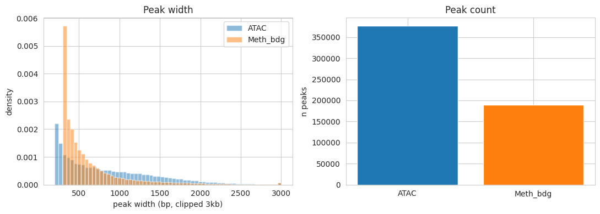
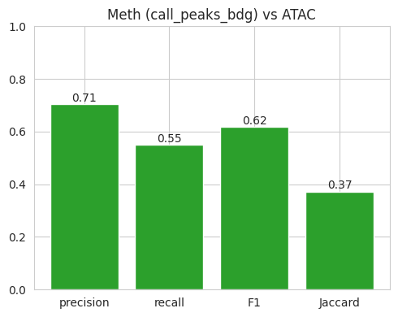
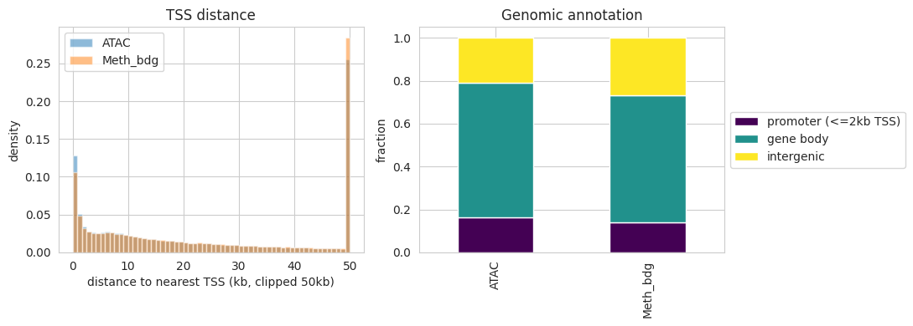

Benchmark: call_peaks_bdg (methylation) vs ATAC-seq peaks
Cell type: STR D2_MSN (hg38).
cytozip.call_peaks_bdg calls peaks from snm3C-seq CpG hypomethylation (umc = cov - mc) as an ATAC-like open-chromatin signal. This notebook benchmarks those peaks against matched ATAC-seq peaks (treated as the open-chromatin ground truth).
Inputs
ATAC peaks:
~/Projects/BG/atac/Subclass.peaks/STR_D2_MSN.macs3.peak.tsvMeth peaks:
~/Projects/BG/pseudobulk/Subclass/D2_MSN_peaks/D2_MSN_peaks.narrowPeakBlacklist:
~/Ref/hg38/annotations/hg38-blacklist.v2.bed.gzGTF:
~/Ref/hg38/annotations/gencode.v43.annotation.gtfChrom sizes:
~/Ref/hg38/hg38_ucsc.main.chrom.sizes
Metrics: basic peak stats, ENCODE blacklist QC, precision / recall / F1 / bp-Jaccard against ATAC, precision-recall vs significance cutoff, and TSS / genomic-annotation distributions. All interval operations are implemented in numpy (no bedtools dependency).
[1]:
import os
import numpy as np
import pandas as pd
import matplotlib.pyplot as plt
import seaborn as sns
sns.set_style('whitegrid')
pd.set_option('display.width', 120)
ATAC_PEAKS = os.path.expanduser('~/Projects/BG/atac/Subclass.peaks/STR_D2_MSN.macs3.peak.tsv')
METH_DIR = os.path.expanduser('~/Projects/BG/pseudobulk/Subclass/D2_MSN_peaks')
METH_PEAKS = os.path.join(METH_DIR, 'D2_MSN_peaks.narrowPeak')
BLACKLIST = os.path.expanduser('~/Ref/hg38/annotations/hg38-blacklist.v2.bed.gz')
GTF = os.path.expanduser('~/Ref/hg38/annotations/gencode.v43.annotation.gtf')
CHROM_SIZES = os.path.expanduser('~/Ref/hg38/hg38_ucsc.main.chrom.sizes')
sizes = pd.read_csv(CHROM_SIZES, sep='\t', header=None, names=['chrom', 'size'])
MAIN_CHROMS = list(sizes['chrom'])
GENOME_BP = int(sizes['size'].sum())
print(f'{len(MAIN_CHROMS)} main chromosomes; genome = {GENOME_BP/1e9:.3f} Gb')
25 main chromosomes; genome = 3.088 Gb
1. Load peak sets
Both files use narrowPeak column semantics (BED6+4). The ATAC TSV carries a header row; the meth narrowPeak does not — the loader auto-detects it. pValue is the MACS3/ENCODE convention -log10(p) in both. summit = start + peak.
[2]:
NP_COLS = ['chrom', 'start', 'end', 'name', 'score', 'strand',
'signalValue', 'pValue', 'qValue', 'peak']
def load_narrowpeak(path):
with open(path) as fh:
first = fh.readline().split('\t')[0].strip()
has_header = first.lower() == 'chrom'
df = pd.read_csv(path, sep='\t', header=0 if has_header else None,
names=None if has_header else NP_COLS)
df.columns = NP_COLS[:df.shape[1]]
df = df[df['chrom'].isin(MAIN_CHROMS)].copy()
df['start'] = df['start'].astype(np.int64)
df['end'] = df['end'].astype(np.int64)
df['peak'] = pd.to_numeric(df['peak'], errors='coerce')
df['peak'] = df['peak'].fillna((df['end'] - df['start']) // 2).astype(np.int64)
df['summit'] = df['start'] + df['peak'].clip(lower=0)
df['width'] = df['end'] - df['start']
df['pValue'] = pd.to_numeric(df['pValue'], errors='coerce').fillna(-1.0)
return df.reset_index(drop=True)
atac = load_narrowpeak(ATAC_PEAKS)
meth = load_narrowpeak(METH_PEAKS)
print('ATAC peaks:', len(atac))
print('Meth (call_peaks_bdg) peaks:', len(meth))
meth.head()
ATAC peaks: 377085
Meth (call_peaks_bdg) peaks: 189633
[2]:
| chrom | start | end | name | score | strand | signalValue | pValue | qValue | peak | summit | width | |
|---|---|---|---|---|---|---|---|---|---|---|---|---|
| 0 | chr1 | 28716 | 29652 | D2_MSN_peak_1 | 1000 | . | 1.15377 | 205.24357 | -1 | 649 | 29365 | 936 |
| 1 | chr1 | 48033 | 48333 | D2_MSN_peak_2 | 1000 | . | 1.59883 | 174.41118 | -1 | 298 | 48331 | 300 |
| 2 | chr1 | 86772 | 87095 | D2_MSN_peak_3 | 1000 | . | 1.40213 | 118.19726 | -1 | 66 | 86838 | 323 |
| 3 | chr1 | 91042 | 91731 | D2_MSN_peak_4 | 1000 | . | 1.46969 | 3100.00000 | -1 | 168 | 91210 | 689 |
| 4 | chr1 | 113825 | 114125 | D2_MSN_peak_5 | 770 | . | 1.48602 | 77.08503 | -1 | 125 | 113950 | 300 |
2. Interval helpers (numpy)
overlap_mask — for each interval in a, does it overlap any interval in b? Per chromosome, b is sorted by start and a prefix-max of ends lets a single searchsorted decide overlap in O(n log n). jaccard computes the base-pair intersection / union between the two peak sets via a coordinate sweep on their merged coverages.
[3]:
def overlap_mask(a, b):
a = a.reset_index(drop=True)
mask = np.zeros(len(a), dtype=bool)
b_groups = {c: (g['start'].to_numpy(), g['end'].to_numpy())
for c, g in b.groupby('chrom', sort=False)}
for chrom, ga in a.groupby('chrom', sort=False):
gb = b_groups.get(chrom)
if gb is None:
continue
bs, be = gb
o = np.argsort(bs, kind='mergesort')
bs, be = bs[o], be[o]
cend = np.maximum.accumulate(be) # prefix-max of ends
a_s = ga['start'].to_numpy()
a_e = ga['end'].to_numpy()
k = np.searchsorted(bs, a_e, side='left') # b with start < a_end
hit = k > 0
idx = np.clip(k - 1, 0, len(bs) - 1)
res = np.zeros(len(ga), dtype=bool)
res[hit] = cend[idx[hit]] > a_s[hit]
mask[ga.index.to_numpy()] = res
return mask
def _merge(s, e):
o = np.argsort(s, kind='mergesort')
s, e = s[o], e[o]
cple = np.maximum.accumulate(e)
new = np.empty(len(s), dtype=bool)
new[0] = True
new[1:] = s[1:] > cple[:-1]
starts = s[new]
ends = np.maximum.reduceat(e, np.flatnonzero(new))
return starts, ends
def merged_coverage(df):
total = 0
per = {}
for chrom, g in df.groupby('chrom', sort=False):
ms, me = _merge(g['start'].to_numpy(), g['end'].to_numpy())
per[chrom] = (ms, me)
total += int((me - ms).sum())
return total, per
def _both_bp(a_s, a_e, b_s, b_e):
pos = np.concatenate([a_s, a_e, b_s, b_e]).astype(np.int64)
da = np.concatenate([np.ones(len(a_s)), -np.ones(len(a_e)),
np.zeros(len(b_s) + len(b_e))])
db = np.concatenate([np.zeros(len(a_s) + len(a_e)),
np.ones(len(b_s)), -np.ones(len(b_e))])
o = np.argsort(pos, kind='mergesort')
pos, da, db = pos[o], da[o], db[o]
covA = np.cumsum(da)[:-1]
covB = np.cumsum(db)[:-1]
seg = np.diff(pos)
both = (covA > 0) & (covB > 0)
return int(seg[both].sum())
def jaccard(df_a, df_b):
a_bp, perA = merged_coverage(df_a)
b_bp, perB = merged_coverage(df_b)
inter = 0
for c in set(perA) & set(perB):
as_, ae = perA[c]
bs_, be = perB[c]
inter += _both_bp(as_, ae, bs_, be)
union = a_bp + b_bp - inter
return (inter / union if union else 0.0), inter, a_bp, b_bp
3. Basic peak statistics
[4]:
def stats_row(name, df):
cov, _ = merged_coverage(df)
return {'set': name, 'n_peaks': len(df),
'median_width': int(df['width'].median()),
'mean_width': round(float(df['width'].mean()), 1),
'total_bp_merged': cov,
'genome_frac_%': round(100 * cov / GENOME_BP, 3)}
stats = pd.DataFrame([stats_row('ATAC', atac), stats_row('Meth_bdg', meth)])
display(stats)
fig, ax = plt.subplots(1, 2, figsize=(11, 4))
for name, df, c in [('ATAC', atac, 'C0'), ('Meth_bdg', meth, 'C1')]:
ax[0].hist(np.clip(df['width'], 0, 3000), bins=60, alpha=0.5,
label=name, color=c, density=True)
ax[0].set(xlabel='peak width (bp, clipped 3kb)', ylabel='density', title='Peak width')
ax[0].legend()
ax[1].bar(stats['set'], stats['n_peaks'], color=['C0', 'C1'])
ax[1].set(ylabel='n peaks', title='Peak count')
plt.tight_layout()
plt.show()
| set | n_peaks | median_width | mean_width | total_bp_merged | genome_frac_% | |
|---|---|---|---|---|---|---|
| 0 | ATAC | 377085 | 706 | 860.6 | 173480167 | 5.617 |
| 1 | Meth_bdg | 189633 | 462 | 631.1 | 119672642 | 3.875 |

4. Blacklist QC
Fraction of peaks overlapping ENCODE hg38 blacklist regions (a low value is a quality signal). Blacklisted peaks are removed from both sets before the concordance analysis below.
[5]:
bl = pd.read_csv(BLACKLIST, sep='\t', header=None, usecols=[0, 1, 2],
names=['chrom', 'start', 'end'])
bl = bl[bl['chrom'].isin(MAIN_CHROMS)].reset_index(drop=True)
atac_bl = overlap_mask(atac, bl)
meth_bl = overlap_mask(meth, bl)
print(f'ATAC in blacklist: {atac_bl.sum()} ({100*atac_bl.mean():.2f}%)')
print(f'Meth in blacklist: {meth_bl.sum()} ({100*meth_bl.mean():.2f}%)')
atac_f = atac[~atac_bl].reset_index(drop=True)
meth_f = meth[~meth_bl].reset_index(drop=True)
print('After blacklist removal -> ATAC:', len(atac_f), '| Meth:', len(meth_f))
ATAC in blacklist: 1983 (0.53%)
Meth in blacklist: 16383 (8.64%)
After blacklist removal -> ATAC: 375102 | Meth: 173250
5. Concordance with ATAC
precision = fraction of meth peaks overlapping an ATAC peak
recall = fraction of ATAC peaks recovered by a meth peak
Jaccard = base-pair intersection / union of the two peak sets
[6]:
meth_ov = overlap_mask(meth_f, atac_f)
atac_ov = overlap_mask(atac_f, meth_f)
precision = float(meth_ov.mean())
recall = float(atac_ov.mean())
f1 = 2 * precision * recall / (precision + recall) if (precision + recall) else 0.0
jac, inter_bp, a_bp, b_bp = jaccard(atac_f, meth_f)
summary = pd.DataFrame([{
'precision (meth in ATAC)': round(precision, 4),
'recall (ATAC in meth)': round(recall, 4),
'F1': round(f1, 4),
'Jaccard (bp)': round(jac, 4),
'intersect_Mb': round(inter_bp / 1e6, 2),
}])
display(summary)
fig, ax = plt.subplots(figsize=(5, 4))
vals = [precision, recall, f1, jac]
ax.bar(['precision', 'recall', 'F1', 'Jaccard'], vals, color='C2')
ax.set(ylim=(0, 1), title='Meth (call_peaks_bdg) vs ATAC')
for i, v in enumerate(vals):
ax.text(i, v + 0.01, f'{v:.2f}', ha='center')
plt.tight_layout()
plt.show()
| precision (meth in ATAC) | recall (ATAC in meth) | F1 | Jaccard (bp) | intersect_Mb | |
|---|---|---|---|---|---|
| 0 | 0.7054 | 0.5501 | 0.6181 | 0.3725 | 77.03 |

6. Precision / recall vs significance cutoff
Meth peaks are thresholded on pValue (-log10 p). A higher cutoff keeps fewer, more confident peaks: precision should rise and recall fall. This shows whether the peak ranking is informative.
[7]:
cutoffs = [0, 2, 5, 10, 20, 50, 100, 200, 500]
rows = []
for t in cutoffs:
sub = meth_f[meth_f['pValue'] >= t]
if len(sub) == 0:
continue
rows.append({'pValue_cutoff': t, 'n_meth': len(sub),
'precision': float(overlap_mask(sub, atac_f).mean()),
'recall': float(overlap_mask(atac_f, sub).mean())})
sat = pd.DataFrame(rows)
display(sat.round(4))
fig, ax = plt.subplots(1, 2, figsize=(11, 4))
ax[0].plot(sat['n_meth'], sat['recall'], 'o-', label='recall (ATAC recovered)')
ax[0].plot(sat['n_meth'], sat['precision'], 's-', label='precision (meth in ATAC)')
ax[0].set(xlabel='n meth peaks kept', ylabel='fraction', title='vs peak count')
ax[0].legend()
ax[1].plot(sat['pValue_cutoff'], sat['precision'], 's-', color='C1', label='precision')
ax[1].plot(sat['pValue_cutoff'], sat['recall'], 'o-', color='C0', label='recall')
ax[1].set(xlabel='meth pValue cutoff (-log10 p)', ylabel='fraction', title='vs significance cutoff')
ax[1].legend()
plt.tight_layout()
plt.show()
| pValue_cutoff | n_meth | precision | recall | |
|---|---|---|---|---|
| 0 | 0 | 173250 | 0.7054 | 0.5501 |
| 1 | 2 | 173250 | 0.7054 | 0.5501 |
| 2 | 5 | 173250 | 0.7054 | 0.5501 |
| 3 | 10 | 173250 | 0.7054 | 0.5501 |
| 4 | 20 | 173250 | 0.7054 | 0.5501 |
| 5 | 50 | 173250 | 0.7054 | 0.5501 |
| 6 | 100 | 162122 | 0.7306 | 0.5370 |
| 7 | 200 | 115992 | 0.8338 | 0.4570 |
| 8 | 500 | 80375 | 0.9038 | 0.3588 |

7. TSS distance & genomic annotation
TSS are taken from GENCODE v43 gene records (strand-aware). We compare how close each peak’s summit sits to the nearest TSS and how peaks partition into promoter (<=2kb of a TSS) / gene body / intergenic.
[8]:
gtf = pd.read_csv(GTF, sep='\t', comment='#', header=None,
usecols=[0, 2, 3, 4, 6],
names=['chrom', 'feature', 'start', 'end', 'strand'])
genes = gtf[(gtf['feature'] == 'gene') & (gtf['chrom'].isin(MAIN_CHROMS))].copy()
genes['start'] = genes['start'].astype(np.int64) - 1 # GTF 1-based -> 0-based
genes['end'] = genes['end'].astype(np.int64)
genes['tss'] = np.where(genes['strand'] == '+', genes['start'], genes['end'])
tss_by = {c: np.sort(g['tss'].to_numpy())
for c, g in genes.groupby('chrom', sort=False)}
genes_iv = genes[['chrom', 'start', 'end']]
print('genes:', len(genes))
def nearest_tss(df):
df = df.reset_index(drop=True)
dist = np.full(len(df), np.iinfo(np.int64).max, dtype=np.int64)
for chrom, g in df.groupby('chrom', sort=False):
t = tss_by.get(chrom)
if t is None or len(t) == 0:
continue
x = g['summit'].to_numpy()
i = np.searchsorted(t, x)
il = np.clip(i - 1, 0, len(t) - 1)
ir = np.clip(i, 0, len(t) - 1)
d = np.minimum(np.abs(x - t[il]), np.abs(x - t[ir]))
dist[g.index.to_numpy()] = d
return dist
atac_d = nearest_tss(atac_f)
meth_d = nearest_tss(meth_f)
for name, d in [('ATAC', atac_d), ('Meth_bdg', meth_d)]:
print(f'{name}: <=1kb of TSS {100*np.mean(d<=1000):.1f}% | '
f'<=5kb {100*np.mean(d<=5000):.1f}%')
fig, ax = plt.subplots(1, 2, figsize=(11, 4))
for name, d, c in [('ATAC', atac_d, 'C0'), ('Meth_bdg', meth_d, 'C1')]:
ax[0].hist(np.clip(d, 0, 50000) / 1000, bins=60, alpha=0.5,
label=name, color=c, density=True)
ax[0].set(xlabel='distance to nearest TSS (kb, clipped 50kb)', ylabel='density',
title='TSS distance')
ax[0].legend()
cats = {}
for name, df, d in [('ATAC', atac_f, atac_d), ('Meth_bdg', meth_f, meth_d)]:
near = d <= 2000
ingene = overlap_mask(df, genes_iv)
cats[name] = [float(near.mean()),
float((ingene & ~near).mean()),
float((~ingene & ~near).mean())]
catdf = pd.DataFrame(cats, index=['promoter (<=2kb TSS)', 'gene body', 'intergenic'])
catdf.T.plot(kind='bar', stacked=True, ax=ax[1], colormap='viridis')
ax[1].set(ylabel='fraction', title='Genomic annotation')
ax[1].legend(loc='center left', bbox_to_anchor=(1, 0.5))
plt.tight_layout()
plt.show()
display(catdf.round(3))
genes: 62703
ATAC: <=1kb of TSS 11.8% | <=5kb 24.4%
Meth_bdg: <=1kb of TSS 10.0% | <=5kb 22.0%

| ATAC | Meth_bdg | |
|---|---|---|
| promoter (<=2kb TSS) | 0.161 | 0.140 |
| gene body | 0.630 | 0.594 |
| intergenic | 0.209 | 0.267 |
8. Summary
Recall = fraction of ATAC (open-chromatin) peaks the methylation caller recovers; precision = fraction of methylation peaks that are genuine (ATAC-supported). The precision/recall-vs-cutoff curve shows whether the
pValueranking is usable to trade one for the other.Jaccard summarises base-pair agreement; peak-count and width differences explain much of any precision gap (methylation peaks tend to be broader / more numerous).
TSS & annotation: strong TSS enrichment and promoter fraction indicate the hypomethylation signal is capturing real regulatory elements. Compare the methylation profile against ATAC as the reference shape.
To benchmark another cell type, change ATAC_PEAKS / METH_PEAKS in the config cell and re-run.